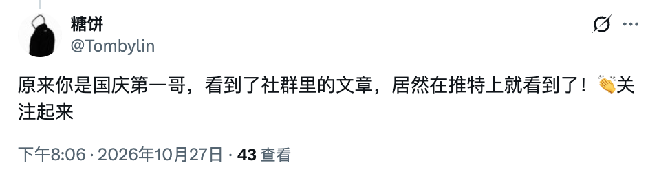
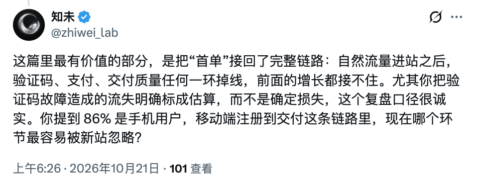
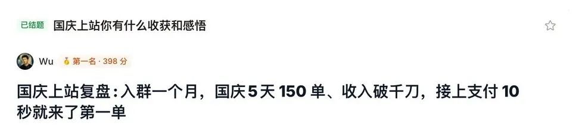
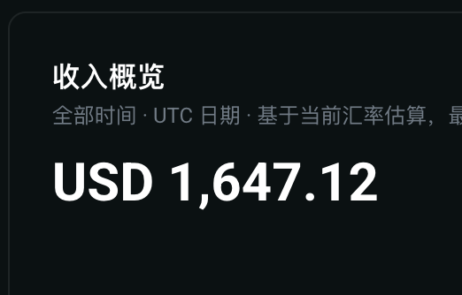
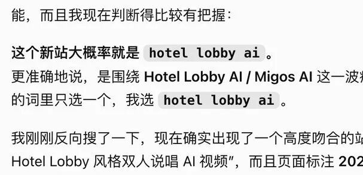
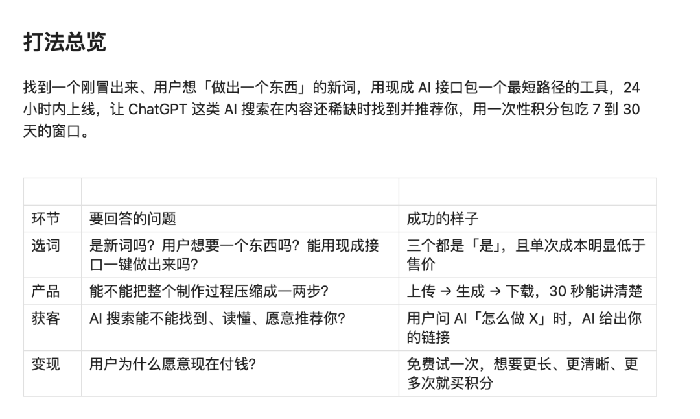
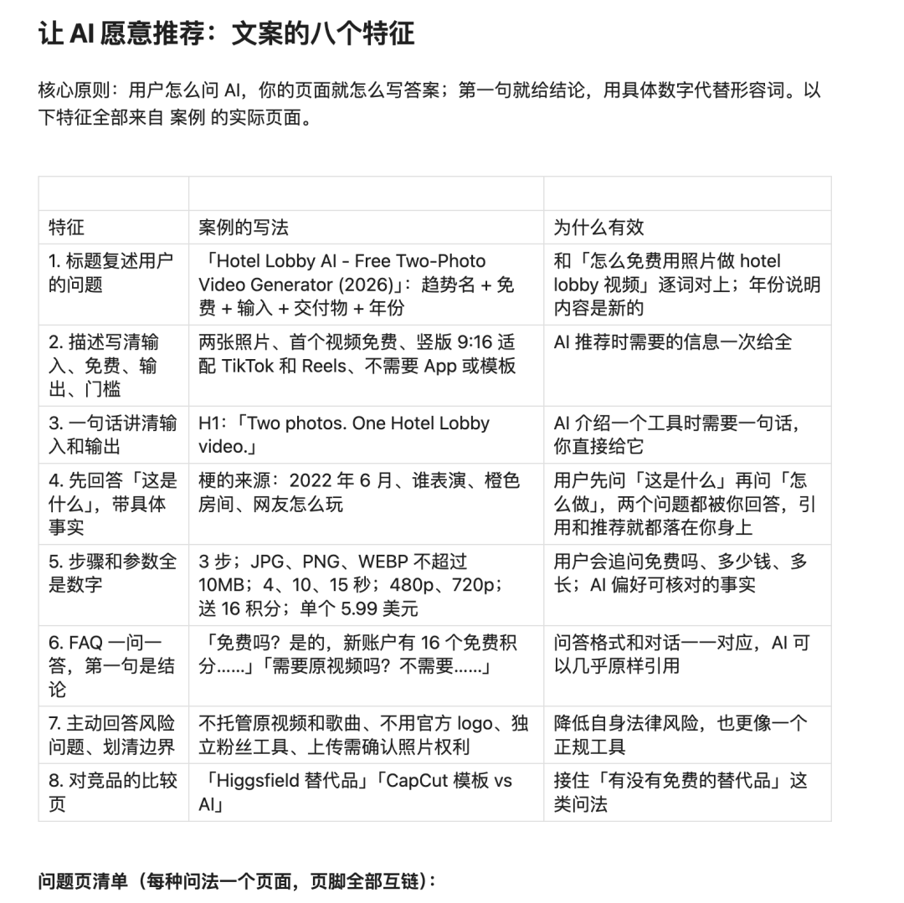
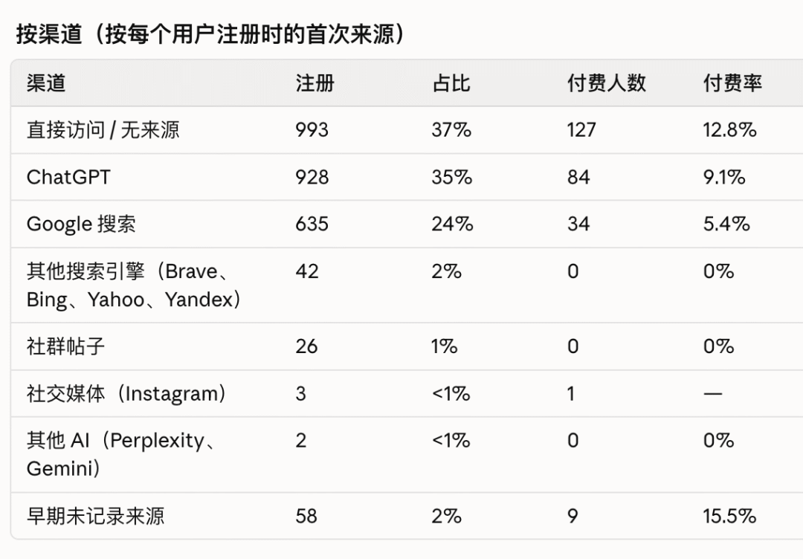
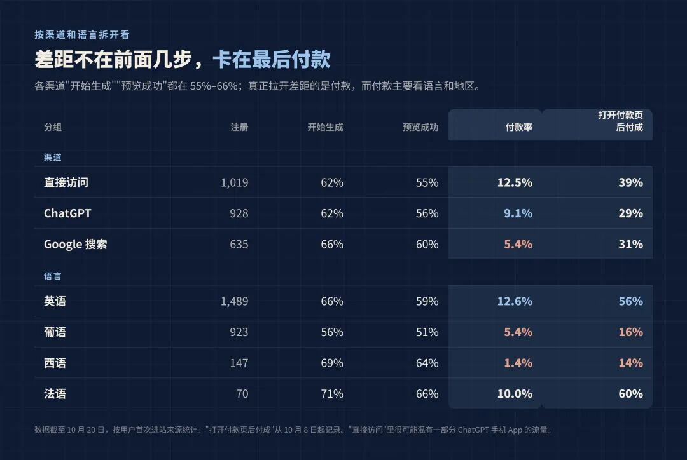
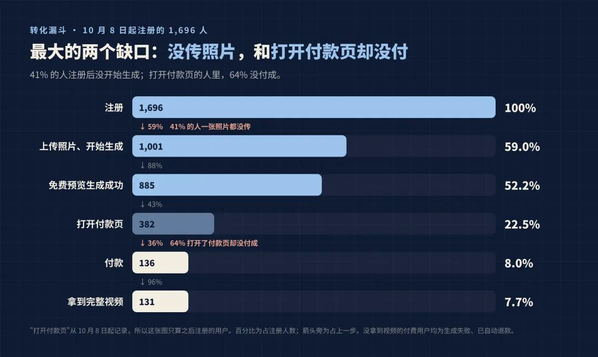

大家好，我是哥飞。
今天分享群友 Wu 的一篇新站复盘，他在 X 上的账号是 @Wuc436。
他今年 5 月开始学做网站，闷头做了 3 个月，产品几乎没人用。9 月他加入社群，从头学 SEO。10 月 3 日晚上注册域名，第二天凌晨第一版上线，当天下午接上支付，不到 10 秒就来了第一单，10 月 7 日累计收入破 1000 美元。到 10 月 20 日，这个站一共进账约 2800 美元。
这篇复盘的社群版，拿了我们国庆上站征文的第一名。公开版里他补上了两周后的数据：注册 2687 人，付费 255 人，最大的流量来源是 ChatGPT。上线头两天踩的坑、定价和付款上的发现，还有一条被他自己推翻的经验，也都写了。
他在文中说，看到机会后晚动手了四天，回头看有点后悔。新词为什么要抢先上线，可以看看我之前写的《新词来了时，请抓住先发优势，尽快发布》。
先给大家看看评论区的画风：


下面是正文。
大家好，我是Wu。
今年5月我开始学习做网站，啥也不懂，闷头研究3个月，重构了N次，结果做出来了一个典型的自嗨产品：0用户，个位数的浏览。
我痛定思痛，最终决定还是找哥飞从头学习SEO。
所以接下来一整9月我都在学习，SEO基础知识都学完了，每天就是研究找词、上站、发外链。学习加实战不到一个月，第4个站终于出了第一单：10 月 4 日首单，10 月 7 日累计收入破 $1,000，到今天这个站一共进账约 $2,800，最大的流量来源是 ChatGPT。
这篇复盘的社群版拿了哥飞社群 10 月征文第一。

这是公开版，补上了两周后的数据，还有一条被我自己推翻的经验。先上收入截图：

接下来，复盘开始：
1. 上站契机
这次上站的契机，是哥飞一直在群里分享他的新站收入。
我很羡慕，但这次没有止于羡慕。
9 月 28 日，哥飞在群里说，他出单的站，就藏在当天的某几条消息里。我直到 10 月 2 日凌晨才行动，已经慢了四天，回头看，确实有点后悔。
那天凌晨，我让 GPT 读取相关的群聊记录，然后问它：
“你能不能看出来，哥飞做的是哪个词？”
GPT 给出了一个比较准确的判断。

我有点震惊。早上五点，睡意全无，直接把那个站发给 Opus，让它拆解打法。

我自己的理解是：
用户已经看到了一个想要的效果，你的网站把这个效果变成了可以直接购买的交付。
比如，用户在 TikTok 上刷到某种 AI 视频，想做一条自己的。他需要的不是研究模型、搭建工作流，而是上传照片、付款，然后拿到视频。
如果这时专门满足这个需求的网站还不多，就存在被搜索引擎或 AI 推荐发现的机会。
但这里还有一个问题：用户会怎么问 GPT？GPT 带着这些问题来找答案时，你的网站有没有把答案说清楚？
用户可能会问：这是什么趋势？怎么做？能不能免费试？上传什么照片？多少钱？多久拿到视频？
这些问题对应什么页面、页面应该回答什么，是我拆解时最关注的部分。

我总结完这些打法之后，心里想着：hotel lobby 这个机会，我已经慢了一步。但如果把这套判断标准定下来，那么接下来看到符合标准的新词，我就知道该怎么做了。
巧的是，10 月 3 日，新词群里还真出现了一个符合这套思路的词：raindance ai。
我查了一下，搜索量不大，和 hotel lobby 差不多同一时期出现，但量级小20倍，工具还提示流量已经处在高点。
我没有马上把它排除，而是继续做了两件事：
1. 查竞争：当时搜索结果里，还没看到专门做这个需求的网站。
2. 查传播：去 TikTok 刷相关视频，看到大量几分钟前的新评论，判断这个趋势仍然有人在关注。
这些信号不能保证一定赚钱，但足够让我决定试一次。
2. 上站完整经历
10 月 3 日晚上 9 点，做完判断后，我注册了域名。
我手上只有一个通用的 SaaS 模板，没有 AI 视频站的现成项目，当晚就开始让 AI 在模板上从头搭生成流程。
一直做到次日凌晨 5 点，第一版终于上线。提交 GSC、Bing 和支付审核后，我去睡觉了。
白天起来后，我有点事情要出门。现在回头看，后悔，非常后悔！回来已经是下午4-5点了。我打开电脑，发现支付审核早就通过了，赶紧让 Claude 去接支付。
接完支付不到 10 秒（窗口任务都还没结束），Claude 突然问我：
“等等，刚刚这笔购买，是你做的测试吗？”
我懵逼了，完全不知道发生了什么。点开后台一看：卧槽，已经有十几个陌生用户注册了，还真有人付了钱。后来查记录才知道：第一个陌生用户下午 2 点左右就注册了，那时候我还在外面；第一单是下午 5 点半。再后来接上来源统计，才知道最大的来源是 ChatGPT。
比起兴奋，我当时更多的是焦虑。后台用户不断进来，又不停地有人购买，而我因为嫌测试太贵，没有充分测试过交付质量。
用户来了，问题也来了。部分视频的镜头里，会出现人物替换不完整、位置不对的情况。
不出意外，那天晚上又通宵了。不停迭代，不停修 Bug，不停测试。好在 Claude 是真的强，帮我把一个个问题处理掉，总算有惊无险地度过了这一轮。对受影响比较明显的付费用户，我补了积分，让他们可以重新生成。
熬到早上 6 点，我去睡觉，心里想着：睡起来说不定会有惊喜。
结果，等来的又是意外。
早上 9 点起床，我才发现，邮件服务的发信额度早在凌晨 4 点多就用完了，用户通过邮箱注册时，收不到验证码。
从凌晨 4 点多到上午 10 点多修好，大约 6 个小时，邮箱验证码一封都发不出去，只有用 Google 登录的人能注册进来。平时八成以上的用户用邮箱注册，这 6 个小时里却只进来了 16 个 Google 用户。按这个比例推算，大约有 60 到 90 位用户卡在了验证码这一步；按当时 10% 左右的付费率，估计少了 6 到 9 单。这是估算，不是能精确确认的实际损失。
我很难受。两个晚上通宵，加起来只睡了八个小时，整个人焦头烂额。
最难受的是，用户明明已经找到了网站，我却因为验证码发不出去，把他们挡在了门外。
就这样，又缝缝补补了一天，网站才算优化到七八分的样子。后面仍然是不停地这里查一下、那里迭代一下。
这次我才知道：出单是正反馈，也是交付责任真正开始的那一刻。
后来的十来天，主要是小修小补和处理用户问题，10 月 11 日之后基本只做维护。期间收到一笔拒付，被扣了 30 来刀。用户发邮件说效果不满意、要退款的，我都直接退，比等到拒付划算。
3. 数据
总体
• 注册 2,687 人
• 付费用户 255 人，付费率约 9.5%
• 订单 320 笔。

有几点数据需要单独拿出来说：

1. ChatGPT 的真实占比很可能比 35%更高。 ChatGPT 推荐链接时会带 utm_source=chatgpt.com 标记，我们靠这个识别。但手机 App 里点开的链接常常不带标记，也没有来源信息，会被算进“直接访问”。
2. Google 来的人最少，付费率也最低（5.4%），不到直接访问的一半。
3. 多语言带来了不少用户，葡语用户（主要是巴西）占注册量的 1/3，但打开付款页后只有 16% 付成，英语用户是 56%。卡住他们的不是页面，是付款方式。
4. 86%是手机用户。
以上数据，没有发过外链，没有投过广告，全部是自然流量。
4. 数据带来的思考，以及几条能直接用的经验
1）好好优化手机页面。
86% 的用户用手机。打开网站第一屏就要看到上传框；价格和付款按钮放在一起，别让用户滑来滑去找；付款页记得开 Apple Pay 和 Google Pay。手机上多一步，就少一批单。
2）认真对待 ChatGPT：它是第一渠道，来的人也更愿意付钱。
ChatGPT 来的用户付费率是 Google 的 1.7 倍（9.1% 对 5.4%），后面几个站差距更大。我做了以下的事情：
• 先列出用户会问 ChatGPT 的问题：这是什么趋势？怎么做？能免费试吗？多少钱？多久出片？
• 每个问题都有一个页面或一段文字直接回答，第一句就给答案，尽量写具体数字；
• 加上 llms.txt，robots 不要挡 AI 爬虫。
上线第二三天，ChatGPT 就把我排在了推荐的第一位。
3）用户买的是“一个视频”。
$6.99 和 $9.99 两个单条套餐，占了 92% 的订单，多条视频的大包几乎没人买。热梗站按次卖就好，别做订阅。
还有个意外：价格档的名字会直接影响销量。我把最便宜那档从 “Standard Video” 改成 “1 Video”，旁边是 “1 HD Video”，它一下子看起来像缩水版，8 个半小时只卖了 4 单；改回原名后，第二天同一时段又卖了 11 单。
4）付费用户里，95% 是注册后 1 小时内付的款。
要么当场买，要么就不买了。我给没付款的新用户发了 800 多封优惠邮件，只换回 1 单。力气要花在第一次访问上：页面讲清楚、上传顺、付款顺、出片稳。从注册到第一次付款，中位数只有 7 分钟。

5）上线前，把“用户付钱之后”的链路完整走一遍。
验证码邮件、支付到账、出片质量、来源统计，这四样我第一天全踩了坑。现在每个新站上线前，我都先把整条流程跑一遍。邮件服务用付费的，再备一家。
6）有一条经验，两周后被我自己推翻了：免费预览。
一开始我以为免费预览能提高付费率。在这个站上，看过预览的人付费率确实更高，但愿意看预览的人本来就更想买。不过，后来又做了几个站，发现数据都不支持：一个站做没做过预览的人，付费率都在 20% 左右；另一个站 13 条免费预览，一单都没换来。现在我的新站默认不给免费预览，改成“出片失败自动退款”来打消顾虑。
5. 之后
10 月 11 日，我判断热度已经过去，停止对这个站继续投入。之后几乎没再花精力，它又进账了 $741。停下来，和开始一样重要。
省下来的精力，我用同一套打法又上了 3 个站，都出了单，4 个站加起来约 $4,000左右。
但我也看得很清楚：随着X上的公开，做这件事的人会越来越多，一个梗出来，一两天内就会冒出好几个同类站。所以接下来我在计划做一件更长期的事，做出结果再来分享。
写在最后
我真的很感谢哥飞，他的社群质量非常高。他的案例让我看懂了打法，新词群让我及时看到了机会，社群里的方法让我知道每天该做什么。
“凡事有交代，件件有着落，事事有回音。”
我认为他做到了。
我之前闭门造车三个月，做出了一个零用户的产品；进群后学习加实战不到一个月，新站终于出了单，收入突破千刀里程碑。对我来说，这个变化很具体。
恭喜 Wu，从三个月零用户，到一个站进账约 2800 美元，后面又上了 3 个站，都出了单。
愿大家都能够学有所成，上站有收入！